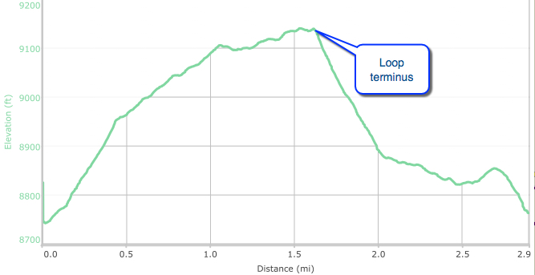

Hike New Mexico
w/ Tom & Ken
Coyote Call Trail
| Difficulty | Round-trip | Type | Elev. Chg. | Exposure | Wow Factor | Facilities | Seasons | Flickr | By Car |
|---|---|---|---|---|---|---|---|---|---|
| Easy | 3 miles | Loop | 400 ft | Sun, some shade | Views of VC | None | Not Winter | Album |  |



- Jun 23, 2016: A look at Rabbit Ridge from the trail head
- Jun 23, 2016: Looking over the Caldera as the climb begins
- Jun 23, 2016: Aspens bear the marks of low burns
- Jun 23, 2016: Results from Las Conchas fire are everywhere
- Jun 23, 2016: Cladera thru burned trees
- Jun 23, 2016: The eastern edge of the Caldera from the loop terminus
- May 19, 2009: Before the fire, lots of shade!
- https://www.flickr.com/photos/139088815@N08/27608712980/in/photostream/
- https://www.flickr.com/photos/139088815@N08/27274460833/in/photostream/
- https://www.flickr.com/photos/139088815@N08/27852055206/in/photostream/
- https://www.flickr.com/photos/139088815@N08/27785701302/in/photostream/
- https://www.flickr.com/photos/139088815@N08/27852043926/in/photostream/
- https://www.flickr.com/photos/139088815@N08/27785685982/in/photostream/
- https://www.flickr.com/photos/139088815@N08/27608768200/in/photostream/
The Coyote Call Trail is a loop trail on the south side of Highway 4, just opposite the Valles Caldera, offering great views of the Valle Grande meadow and surrounding mountains. Since the Las Conchas Fire, the shade trees no longer exist to provide cover, but rather a stark reminder remains of the effects of the fire. The trail ascends from the trailhead just off the highway between miles 41 and 42 (about 41.8), then banks east into the remains of the forest. Many signs of regeneration exist along the way, from wildflowers to numerous very young aspens, making it nonetheless an interesting hike.